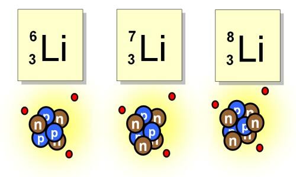

Isotopes of elements occur when atoms have the same atomic number (Z) but different numbers of neutrons in the nucleus. The numbers of neutrons in an atom does not affect the way an element behaves chemically, but it does affect the way it behaves physically. The protons in the nucleus are held together by the strong nuclear force which overcomes the electrostatic repulsion between individual protons. The neutrons are vital to the stability of the nucleus – not only do they separate the protons somewhat, thus reducing the electrostatic repulsion, they also contribute to the strong force. Too many or too few neutrons can affect the stability of the nucleus causing radioactive decay to occur and new elements to be formed. Isotopes found in nature are generally stable, however radioactive isotopes do exist such as 238Uranium.
